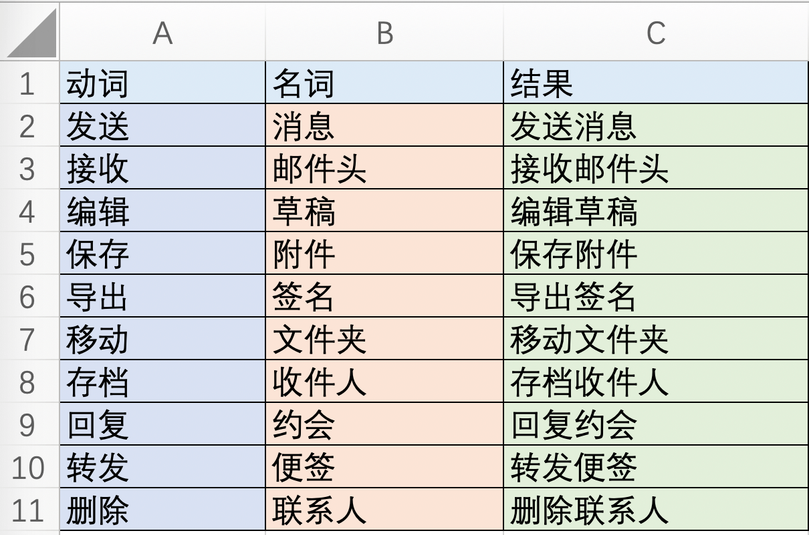
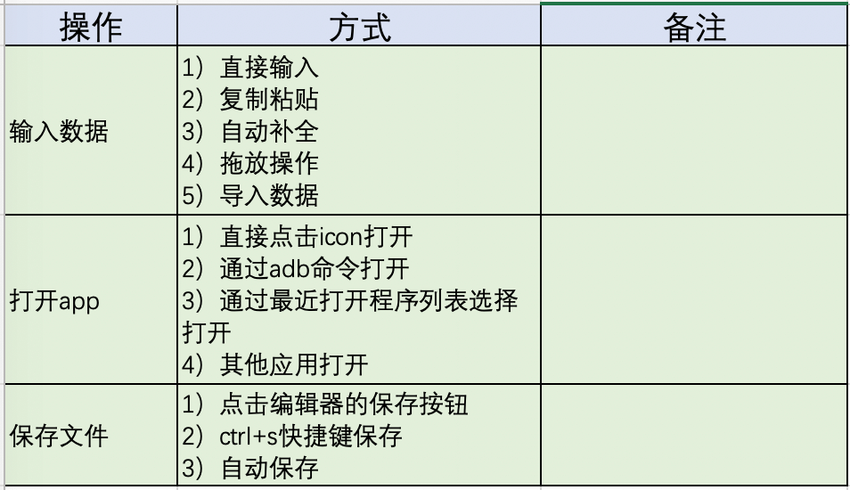
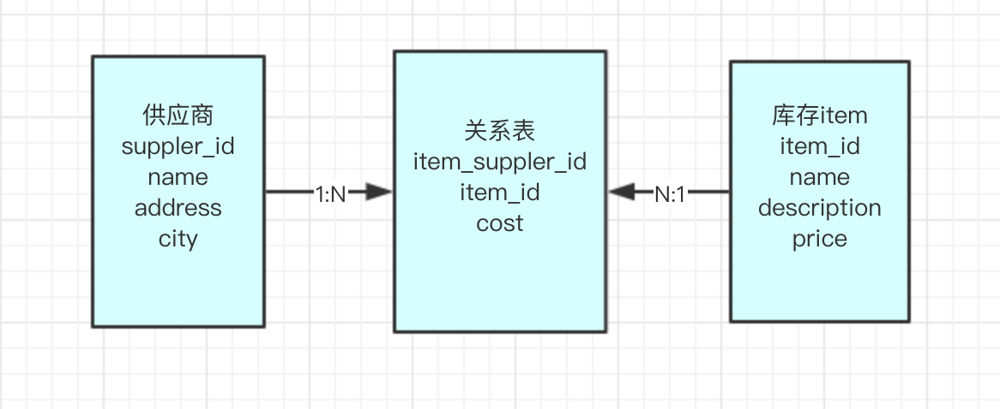
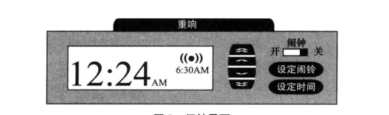
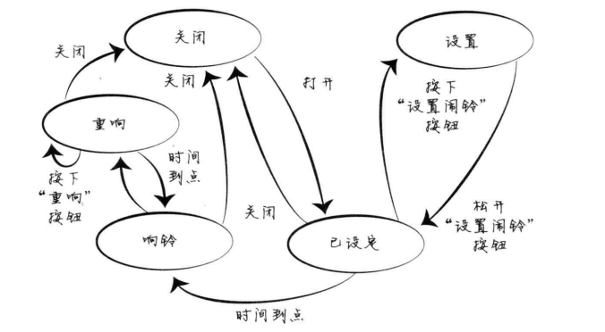
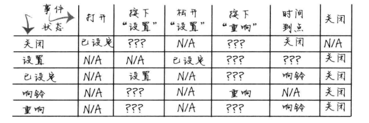
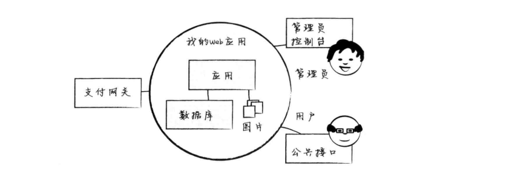

在【测试理论】如何做好探索性测试（一）—基础篇 中，我们介绍了探索性测试的基础内容，我们简单回忆下主要包括：常规测试方案与探索性测试是相辅相成的、在工作中，寻找探索性测试点的时机(需求评审、用例评审)、寻找那些产品中的变量，比如：可计数的东西、地理位置、文件和存储、时间点等等、收集用户的反馈(操作的漫无目的及随机性)等。
今天我们接着来介绍探索性测试从不同的维度深入进去来挖掘测试点，其中还是以理论偏多，希望大家能耐心的看完。同时我也建议大家去读一读探索性测试的书，比如：《探索吧，深入理解探索式软件测试》。因为我的文章也是参考的这本书，通过读这本书，我深刻的感知到探索性测试确实可以作为我们常规测试的一个补充，因为它真的可以给我们提供不一样的思路，从而帮助我们挖掘更深层次的问题。
试想过往我们经历过的场景：你负责测试某一个功能模块，其中有一些表单页面，当你对该功能模块非常熟悉时，你应该会使用相同的数据，快速的输入，比如：姓名你会固定使用周杰伦，地址你会使用xxx街22号等、又或者你登录app后，总是切换到首页的某个功能列表中等等。造成这种情况的主要原因有两个：思维定势和习惯，所以要有效的进行探索性测试，就必须打破这种常规习惯。
大家都清楚，一个正常的句子通常包含名词、动词和形容词，对于被测的系统来讲，我们可以尽情的找出其中的名词和动词，以测试某个邮件客户端为例(书中的例子)，名词或者事物可能包含：邮件、附件、联系人、账户和文件夹；而对应的动词有：创建、发送、编辑、转发、复制、删除、移动等。可以在表格中，将他们都列出来，这就可以得出如下图所示的表格(可以在Excel中列出)：

当然上面我只是列出了一部分的组合场景，你还可以根据情况组合出更多可探索的测试点。不过需要注意的是，有些组合结果看上去像是不合乎逻辑，但我们不能就这么放过这样的组合，而应该多找找看看，有没有办法能解释这些没有意义的组合，从而可以找到可探索的点。比如上面表格中的"导出签名"，看上去意义不太明确，但可以考虑，是否可以理解在邮件客户端中直接将签名导出保存起来，或者将签名复制粘贴到其他地方存起来，总之不能放过任何的蛛丝马迹。
回想下，我们测试某个app时，总是点击桌面的icon图标来打开被测应用，那你有没有尝试从历史应用中打开被测应用？或者通过adb 命令打开被测应用？所谓随机导航，其实需要你收集被测系统中，完成相同操作所需要的方法，然后可以将他们记录到表格中，比如：

将所有的情况列出来之后，就可以开始探索不同操作方式。当然还可以结合着用例场景，对不同的操作方式进行组合，也能发现一些让你惊喜的测试点。
所谓角色人物，是指将测试系统的用户群体进行细分，进而能抽象出不同的角色人物。针对不同的角色人物，你可以在测试时，设想他们的操作习惯、心理变化等，来探索他们在操作软件时会做哪些操作。
拿手机淘宝app来举个例子，手淘的用户群体很广，所以也给了我们充分的设计角色人物的空间，比如下面有三种角色：
设想一个场景，比如：手淘使用某个功能时很卡，响应很慢，那么上面三个角色的反应也是不同的：
如果你们的产品有很详细的用户数据（年龄、职业、性别等），那就能更好的来设计角色人物。在做探索性测试时，你可以临时的让自己去扮演对应的角色，发挥自己的想象力，要注意这个角色试图做的任何事情，然后观察软件是如何响应的。
系统和软件，其实就是实体和实体构成的，所以当做探索性测试时，如果能基于它们之间的关系，挖掘一些测试点，也能帮助你发现很多问题。
实体：实体也可以叫做事物，是一个系统或者软件的基本组成部分，比如：一个账户、一个头像、一条数据等都可以被称之为实体。注意留意系统中的隐藏实体，比如：web页面登录后创建的会话。
属性：实体有对应的属性，比如：电子邮件有收件人、主题和正文、商品有价格和数量等。
依赖：实体和实体之间，必然是有联系的，并且可能存在依赖关系。假如你看见这样的句子格式："xxx有个xxx"时，一般就能找到依赖关系，比如：一张订单有多个商品item、一款商品有多家供应商等。
有了上面的基础概念，我们就可以来绘制实体之间的关系图(ERD）。假如现在有一个库存管理系统，系统的每一条库存数据都对应了某一家供应商，他们之间的关系图如下（其实和数据库的表之间关系图类似）：

对数据库熟悉的小伙伴应该对CRUD不陌生，它指的是对软件中数据的增、删、改、查。在探索性测试中，也可以找到实体在CRUD时，引起的一些变化，主要有以下几个方面：
数据变量的CRUD：在进行CRUD时，改变实体的属性值。比如：在新创建一条库存数据时，将所有的字段全都填写上，然后再尝试去掉某几个值，并更新库存数据。
其他CRUD方法：这个和前面提到的随机导航类似，需要寻找不同的方式对实体进行CRUD操作，比如：新创建一个文件，可以直接通过新建菜单创建，或者可以针对一个现有文件，选择“另存为”新的文件。再比如，在某些场景下系统会触发自动创建一条提醒消息，和用户手动触发创建的提醒消息，它们经历的工作流可能是有差别的。
零、单、多依赖的CRUD：主要考虑实体间的依赖关系，比如：你创建一个独立的实体，不给它添加依赖项，看系统数据是否运行正常；另外假如删除一个有很多依赖的实体，那么观察它的依赖是否也会被删除。
在进行上面CRUD探索时，要时刻留意服务端的日志，看是否有异常出现，以发现潜藏的问题。
我们经常会碰到某些bug极难重现的情况，可能是一个非常偶然的灾难性错误，或者是无意间用到了受损的数据。这种情况，往往是凑巧碰上了一个短暂的脆弱期，因为其短暂且特殊，所以你可能花费很多时间去复现他们也会无功而返。
问题的关键是，我们怎样去发现和利用出现问题时的脆弱期。幸运的是，可以采用系统化的分析方式，借助于状态模型，用于启发我们如何去探索这样的脆弱期。
事件可以触发系统中实体状态的转换，比如：你点击了软件界面上的某个删除按钮，那么就会触发系统中删除一条数据，在寻找事件过程中，注意以下事项：
在每个事件发生时，都会有对应的状态发生变化。
以某个系统的登录模块为例，来展示一个状态模型图：
按照这种方式，系统或软件可以被划分成很多个模块，每个模块都可以来构建状态模型图。为了更有针对性，不至于分散，可以从如下几个方面来考虑构建状态模型图。
有了上面绘制的状态模型图，就可以将它作为地图，找到两个状态之间的所有路径，也能很直观的看到引起状态发生变化的事件，我们接下来我们来看看如何去寻找状态之间的所有途径。
以开和关两种常见的状态为例，那么可以考虑：
所以有了状态图，以及我们知道如何探索状态之后，就可以结合难以复现的bug，实际操作下，绘制其关联的状态模型图，然后探索从正常状态到异常状态之间的各种可能性。
此外，还可以将状态模型图转换为状态表格，这样也许你有更多机会发现状态的转换（状态模型图可以帮我们从整体上来理清楚待测系统的各种状态）。假设我们现在有一个闹铃，其功能界面如下：

如图所示，其主要功能包含：
其状态模型图如下：

状态模型图转成表格状态图如下：

那结合上面的状态表格，我们就可以进行探索，比如：设置+时间到点—>表示正好设置了一个当前时间，会怎么样？凡是我们想探索的不确定的全部都标记为？？？，而对于不需要探索或不符合逻辑的状态组合，则标记为N/A。
我们要测试的软件，肯定不是单独存在的，首先它肯定运行在操作系统上，然后它需要用到内存、文件系统、数据库和网络连接等系统资源，此外某些软件还可能跟其他软件或者外部服务有关联。我们之前的讨论都是基于内部系统，但从整个系统层面来考量软件同样重要。
软件的生态系统图包括软件所处的环境、所有入口和所有外部依赖，我们可以把它作为一张探索地图，围绕连接和依赖进行针对性的系统探索，以便发现在系统控制范围外跟系统各个部分相关联的风险。我们以一个信用卡支付的web系统作为例子：

上面这张图的各种元素含义如下：
在画系统图时，如果不是特别清楚，可以咨询开发，或者问他们要系统设计图。通过这张系统图，我们就能很直观的，对软件的整个运行环境了解，从而找到可探索的测试点。
所谓信任边界，简单的讲就是：我们信任我们所依赖的外部系统（数据、接口、网络），以上面的生态图为例，我们相信圆圈外部的“支付网关”能提供给我们正确的数据。
不过我们在做探索性测试时，要尝试打破这种“信任边界”，针对不同情况的外部依赖，我们可探索的情况如下：
因为本文内容特别多且多为理论知识，所以我们简单回顾下上面介绍的内容：
探索性测试目前还多以理论为主，但是看完相关的学习资料后，还是觉得它确实是我们做常规测试时的一个重要的补充，后面会慢慢的整理一些可以实操的行之有效的方法。但是我觉得理论知识同样重要，希望大家能有所收获。